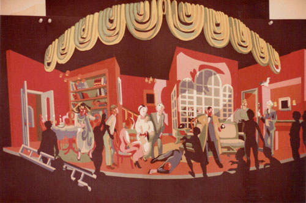
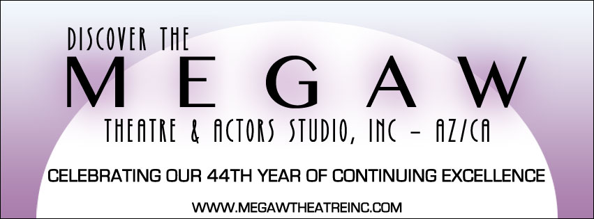

Professional training for serious careers in theatre and film.
About The Megaw Theatre/Actors Studio, Inc. Ca/Az
The MEGAW & Artistic Associates 44 year artistic association with casting directors, agents, managers and producers coast to coast hosts a legacy of exceptional talent on the live stage and in film and television.

The MEGAW Theatre, Inc. collaborative artists have received hundreds of Critics Awards for producing, directing, acting, writing, designing, workshops, mentorship and arts outreach that include: National Actors Competition, Director's Award as one of the Top Ten Private Studio's in USA". LA Drama Critic Circle, Drama-Logue, LA Weekly, LA Reader, Robby, Goldy Awards, AriZoni awards and nominations as well as distinguished Lifetime Achievement, Civic, Educational and Mentorship Honors.
